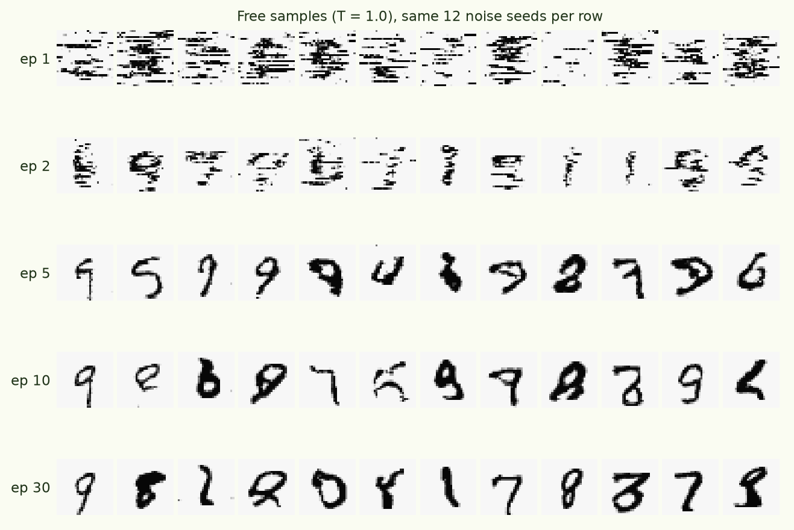
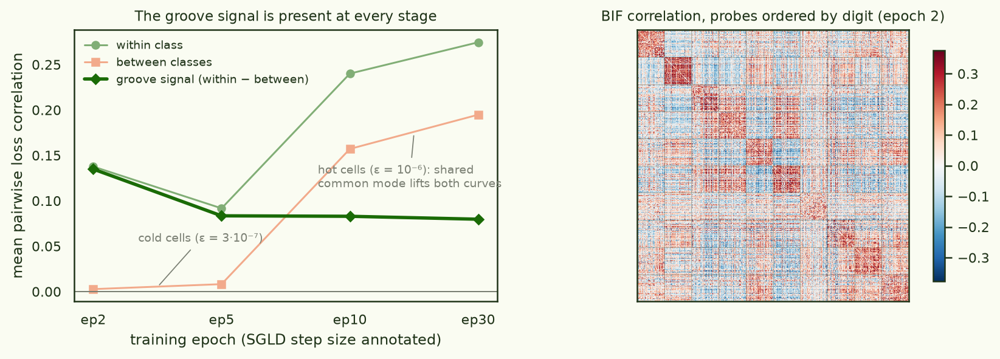
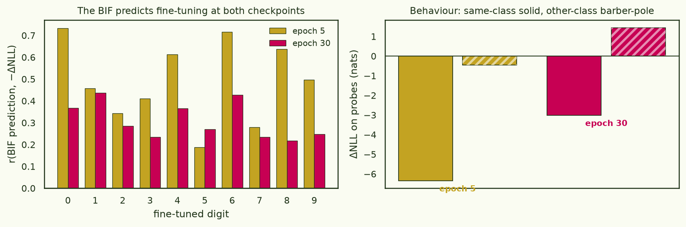
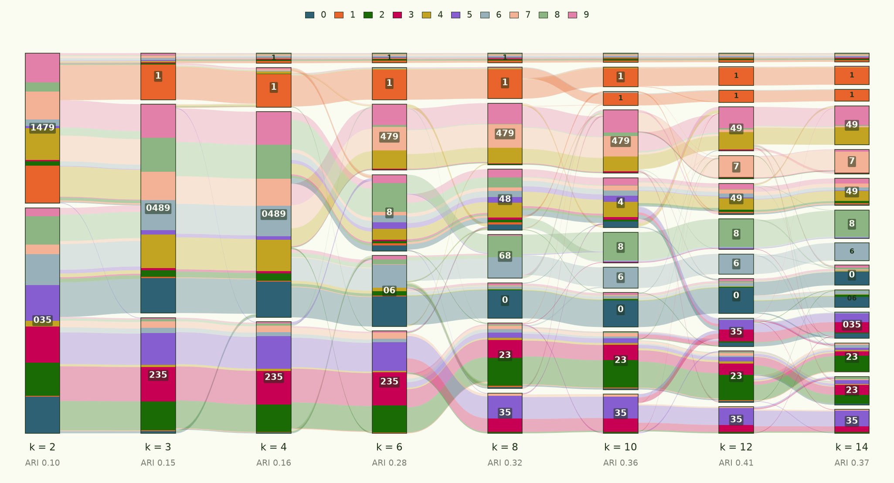

Loss-landscape grooves: Bayesian influence functions on autoregressive MNIST
Rewritten · 2026-07-03
This piece has been rewritten top to bottom, same day, twice over. v1 studied a patch-level logistic-normal density model and reported that class grooves close at convergence; a same-day correction traced that headline to an SGLD estimator artifact. v2 — this page — drops the exotic density model entirely and redoes the study with the most standard recipe available: a pixel-level autoregressive transformer with tied embeddings and cross-entropy loss, plus the fixed estimator. The old model earned its retirement: everything below is cleaner, stronger, and reproducible at r ≥ 0.9 per result. v1 and the correction live in this site's git history.
If natural abstractions are real, they should leave marks on a trained model's loss landscape: datapoints that share a latent (say, being a four) should sit in the same groove, so that wiggling the weights moves their losses together. This piece tests that on MNIST with the , estimated by sampling around trained checkpoints (the standard recipe: train with AdamW, then sample the local posterior). Four results: same-class losses co-fluctuate under posterior sampling while cross-class correlations sit near zero — visible as clean blocks in the BIF matrix at every checkpoint; the BIF's class structure predicts what per-class fine-tuning actually does (r ≈ 0.3–0.5, sign correct 10/10, at early and converged checkpoints); unsupervised clustering of the BIF recovers digit classes better than clustering the raw images — the loss-landscape geometry carries more class information than pixel space; and none of this is measurable without fixing the estimator first (§2), which is half the story.
§1Setup
The model is deliberately boring — the point is that nothing below depends on an exotic objective. Each 28×28 digit is quantised to 16 grey levels and unrolled into 784 raster tokens; a small decoder-only transformer with tied input/output embeddings predicts each pixel token from the previous ones with plain cross-entropy. It is a language model whose language happens to be MNIST.
- model
- d128 · 4 layers · 4 heads (0.9M params); 784 tokens, vocab 16, tied embeddings; dropout 0.1
- training
- AdamW 3e-4, cosine, 30 epochs, batch 256 → 0.42 bits/pixel test; checkpoint every epoch
- BIF
- devinterp SGLD (localised, γ=100, nβ=m/ln m), 8 chains × 650–1,300 draws, ε calibrated per checkpoint (hottest stable), two fully independent runs per estimate, gated on agreement r ≥ 0.9
- estimator
- block-centred covariance (§2); every run self-reports split-half agreement, autocorrelation time, ESS
- ground truth
- per-class AdamW fine-tune (20 steps @ 1e-5) → ΔNLL on 510 class-balanced probes
- code & artefacts
- arcadia-impact/small-abstraction-test-{logs, mnist-ar} on HF (private)
What the model learns, visually: at epoch 1 it has discovered that MNIST has horizontal runs of ink; by epoch 2, stroke fragments; by epoch 5, digit-like glyphs; by epoch 10+, clean digits. The BIF cells below sit at epochs 2, 5, 10 and 30 of this trajectory.


§2First, make the estimator converge
The BIF between probes i and j is the covariance of their losses under the local posterior, estimated from SGLD draws. The naive estimator — covariance over the whole trace — turns out to be quietly broken at the step sizes sharp minima force on you: the chain's loss level wanders on a timescale comparable to the entire run (integrated autocorrelation time τ ≈ 60 on 250-draw windows, ≈ 680 on 2,500-draw windows), so each chain contributes only ~4–7 effective samples no matter how long it runs. Two runs that differ only in RNG then disagree — and from within-run split-half agreement predicts the across-run agreement almost exactly, which is how you know the disagreement is pure sampling noise rather than anything systematic.
The fix is to stop asking the slow mode to average out: centre each short block of ~5–10 consecutive draws and average block covariances — a high-pass filter that keeps the fast, well-mixed fluctuations. On this model it lifts seed-to-seed agreement from 0.26–0.84 (raw, depending on how unlucky the cell is) to 0.88–0.98:

Three recipe rules fell out of the debugging, and they now run automatically: every estimate is two independent runs with an agreement gate; every run self-reports split-half agreement, τ, and effective sample size (an underpowered estimate announces itself); and SGLD step size is calibrated per checkpoint to the hottest stable value, because mixing — not draw count — is what estimates are starved of. One more lesson worth stating plainly: anything computed from long-window covariances of SGLD traces inherits the slow mode's non-convergence silently. v1 of this piece is what that failure mode looks like when it gets published.
§3The grooves
With trustworthy estimates, the structural question is simple: do same-class probes co-fluctuate more than cross-class probes? Overwhelmingly. In correlation units, same-class pairs co-move at r ≈ 0.09–0.14 (cold cells) while cross-class pairs sit at 0.003–0.01 — a near-zero baseline, so the class blocks are visible to the naked eye in the sorted matrix:

Digit classes carve grooves into the loss landscape at every stage of training we can sample — same-class losses co-fluctuate under posterior perturbation while cross-class correlations sit near zero.
Two temperature facts worth recording. First, the step-size ceiling maps the local sharpness, and on this model it rises with training (epoch 5 tolerates only ε = 3×10⁻⁷; epoch 30 takes 10⁻⁶) — the converged minimum is the flat one. The logistic-normal model of v1 had it exactly backwards (its ceiling collapsed as its density head sharpened), which is what made its late-training estimates unmeasurable with the raw estimator. Second, hotter chains carry a global common mode (everything co-moves as the chain wanders farther) — harmless once you know it's there, poison if you ensemble matrices across temperatures without normalising.
§4Ground truth: the BIF predicts fine-tuning
The influence-function reading makes an operational claim: if BIF(i, j) is large, fine-tuning on i should reduce loss on j. Tested literally — fine-tune a fresh copy on a single class for 20 AdamW steps, measure ΔNLL on all 510 probes, correlate with the BIF's class-row prediction:

Mean per-class r = +0.49 at epoch 5 (10/10 classes positive) and +0.30 at epoch 30 (sign correct 10/10) — the local posterior sees the same structure that gradient fine-tuning exploits, at both ends of training.
§5The goal: recovering the classes unsupervised
Everything above uses the labels to check the structure. The actual goal is to recover the abstraction without them: cluster the BIF matrix and see whether digit classes fall out. v1's honest negative was that they don't (ARI ≤ 0.08 after every denoising trick we had). With the standard model and the fixed estimator, they now do — imperfectly but unmistakably:

Spectral clustering of the checkpoint-ensembled BIF recovers digit classes at ARI ≈ 0.36 — above the raw-pixel k-means baseline (0.30) and 4–5× the logistic-normal model's ceiling.
Three ingredients matter, in order: the estimator (raw-covariance matrices cluster at chance); ensembling across checkpoints (epoch 2 + 5 + 30 matrices, z-scored then averaged — different training stages contribute complementary class information, and the z-scoring is what stops the hot cells' common mode from drowning the cold cells' signal); and kNN-sparsifying the affinity before the spectral step. One thing that does not help: quadrupling the probe set (a 2,050-probe epoch-2 cell clusters at ARI 0.29 by itself) — per-pair estimate quality binds, not node count. The per-digit anatomy is the most interesting part: 0, 2, 8 recover cleanly (recall 0.78–0.82) and 1, 5, 6, 9 substantially (0.55–0.67), while 3 and 7 dissolve — each into its shape family (3 into the loops-and-curves cluster with 5 and 8; 7 into the angular-stroke cluster with 9 and 1), with 4 borderline (0.45). The grooves that exist are shape-family grooves first and digit grooves second — which is itself a statement about which abstraction the landscape actually encodes.
Sweeping the number of clusters makes that taxonomy explicit. The landscape's first cut (k = 2) is strokes versus curves: {1, 4, 7, 9} against {0, 2, 3, 5, 6, 8}. At k = 3 the ones get a cluster of their own — much the most groove-isolated digit — and 4 and 9 defect to the enclosed-loop family {0, 4, 8, 9}, leaving {2, 3, 5} as a stable open-curve family that survives until k ≈ 8. From there digits crystallise out one at a time (8, then 0 and 6, then 4), 7 only escapes the {4, 7, 9} cluster at k = 12 — and {4, 9} never separates at any k we tried. Agreement with the digit labels actually peaks at k = 12 (ARI 0.41), not k = 10: letting the sticky families over-split into style variants recovers more digit information than forcing exactly ten clusters.

§6Limits and honest notes
| claim | status | evidence |
|---|---|---|
| grooves exist at all sampled checkpoints | robust | gated cells, r 0.88–0.98 |
| BIF predicts fine-tuning | robust | r +0.49 / +0.30, sign 20/20 |
| clustering beats raw-pixel baseline | yes, modestly | ARI ~0.37 vs 0.30 |
| full digit recovery | no | 3, 7 dissolve into shape families |
| groove depth comparisons across settings | temperature-laden | magnitudes scale ~ε^1.7; only matched-protocol contrasts are meaningful |
Absolute BIF magnitudes are a property of the sampling temperature as much as of the landscape (a 6× step-size change scales covariances ~20×, while the pattern correlates at r ≈ 0.85–0.98 across temperatures). Everything quantitative above is therefore normalised (correlations, ratios) or matched-protocol. And the class-covariance structure keeps developing for thousands of SGLD steps after burn-in looks flat, so budget-matched comparisons are mandatory — several of v1's numbers died of exactly this.
§7What's next
- Scale past MNIST: a CIFAR-10 run is in flight now — 4×4 patches tokenized by a purpose-trained VQ-VAE (8×8 grid of 64 codes from a 512-code book), same token-AR transformer recipe, same gated BIF machinery, on an H100. CIFAR classes are visually heterogeneous, so it's a real test of whether the grooves are class-level or appearance-level.
- Temperature as an object, not a nuisance: sweep nβ explicitly and map how groove structure varies over the tempered-posterior family.
- Preconditioned influence: measure the BIF in the AdamW metric rather than SGLD's isotropic one, and see whether the fine-tuning prediction (§4) sharpens.
674f996–6f01df7+ — pixel-CE model, block estimator, replica-batched sampler, VQ tokenizer for the CIFAR follow-up).
Artefacts · HF arcadia-impact/small-abstraction-test-logs (every SGLD trace, BIF matrix and study ledger of v1 and v2) · arcadia-impact/small-abstraction-test-mnist-ar (checkpoints).
Compute · v1: 4090 + A100, ≈ $7. v2 (recipe debugging + pixel study + clustering): 4× 4090, ≈ $9. Pods deleted after verified upload; CIFAR H100 running at time of writing.